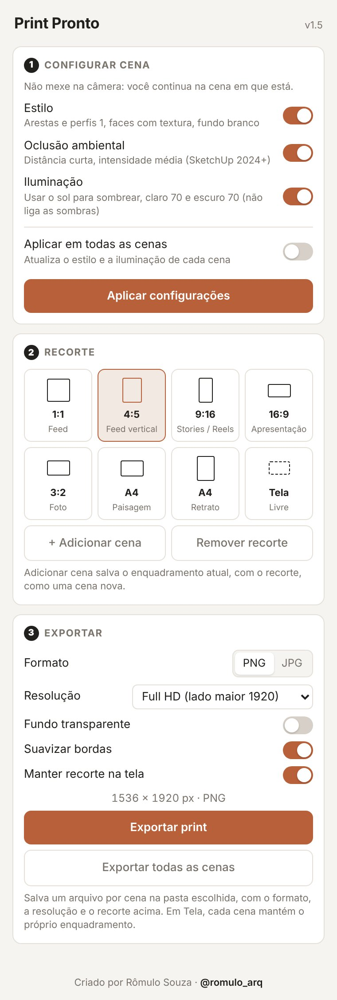

Um clique deixa a cena com o estilo e a iluminação que eu uso no escritório para gerar renders com IA. Depois, você escolhe o recorte e exporta na resolução certa.
Depois de baixar, siga os 4 passos de instalação.
O plugin não mexe na sua câmera nem tira você da cena em que está. Ele só ajusta o que costuma ser esquecido antes de mandar o print para a IA.
Aplica o estilo que funciona bem como base para render, na cena atual ou em todas.
Mostra na tela a moldura do formato escolhido. Com um clique em Adicionar cena, o enquadramento vira uma cena nova.
Salva o print em PNG ou JPG no tamanho certo, ou exporta todas as cenas de uma vez, um arquivo por cena.

Ele aparece como uma barra com dois botões e no menu Extensões. As escolhas ficam salvas para o próximo projeto.
O arquivo vem no formato .rbz, o pacote de extensão do próprio SketchUp. Não precisa descompactar.
Use o botão desta página e salve o PrintPronto.rbz.
No SketchUp, vá em Extensões › Gerenciador de extensões.
Clique em Instalar extensão, escolha o .rbz e confirme.
Feche e abra o SketchUp. A barra do Print Pronto aparece em seguida.
Um bom print é metade do resultado. A outra metade é saber o que pedir para a IA. No e-book Do Print ao Render com IA eu mostro a estrutura de prompt que uso para transformar prints simples em imagens de apresentação.
A IA ajuda a mostrar o projeto. As decisões continuam sendo do arquiteto.
Os prompts que eu uso no meu escritório, cada um com a imagem que ele gerou.